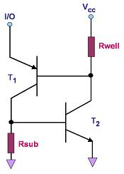

Latch-up
Latch-up
pertains to a failure
mechanism wherein a parasitic thyristor (such as a parasitic silicon
controlled rectifier, or SCR) is inadvertently created within
a circuit, causing a high amount of current to continuously flow through
it once it is accidentally triggered or turned on. Depending on the
circuits involved, the amount of current flow produced by this mechanism
can be large enough to result in permanent destruction of the device due
to electrical
overstress (EOS).
An
SCR
is a 3-terminal
4-layered
p-n-p-n
device that
basically consists of a PNP transistor and an NPN
transistor as shown in Figure 1. An SCR is 'off' during its normal state
but will conduct current in one direction (from anode to cathode) once
triggered
at its gate, and will do so
continuously
as long as the current through it stays above a 'holding' level.
This is easily seen in Figure 1, which shows that 'triggering' the
emitter of T1 into conduction would inject current into the base of T2.
This would drive T2 into conduction, which would forward bias the
emitter-base junction of T1 further, causing T1 to feed more current
into the base of T2. Thus, T1 and T2 would
feed each
other
with currents that would keep both of them saturated.

Fig.
1. A parasitic thyristor that can result in latch-up
A parasitic SCR is
a pseudo-SCR device that
is formed by
parasitic
bipolar transistors
in the active circuit. These parasitic bipolar transistors, in turn,
result from various p-n junctions found in the circuit. Latch-up is more
widely associated with
CMOS
circuits
because CMOS structures tend to contain several parasitic bipolar
transistors which, depending on their lay-out, can form a parasitic SCR
by chance.
Examples of
parasitic bipolar transistors that may be found in CMOS circuits are as
follows: 1)
vertical PNP
transistors formed by a p-substrate, an n-well, and a p-source or
p-drain; and 2)
lateral NPN
transistors formed by an n-source or n-drain, a p-substrate, and an
n-well. These parasitic PNP and NPN transistors may be coupled
with point-to-point stray resistances within the substrate and the
wells, completing the SCR configuration in Figure 1. If such an
SCR device is formed from these parasitic transistors and resistors,
then latch-up can occur within the device.
Events
that can
trigger
parasitic thyristors into latch-up condition include: excessive
supply voltages, voltages at the I/O pins that exceed the supply rails
by more than a diode drop, improper sequencing of multiple power
supplies, and various spikes and transients. Once triggered into
conduction, the amount of current flow that results would depend on
current limiting factors along the current path. In cases where
the current is not sufficiently limited,
EOS damage such as metal burn-out can
occur.
The best
defense against latch-up is good product design. There are now
many
design-for-reliability
guidelines
for reducing the risk of latch-up, many of which can be as simple as
putting diodes in the right places to prevent parasitic devices from
turning on. Of course, preventing a device from being subjected to
voltages that exceed the absolute maximum ratings is also to be observed
at all times.
See Also:
Failure Analysis;
Die
Failures; EOS
HOME
Copyright
©
2005
www.EESemi.com.
All Rights Reserved.